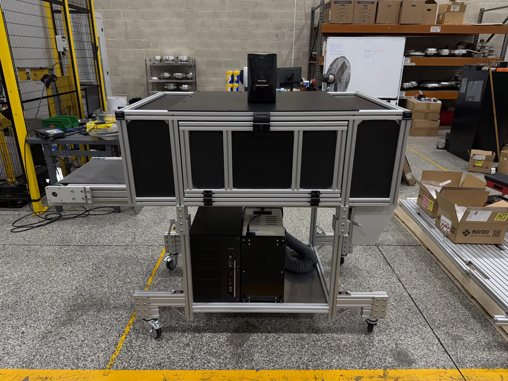
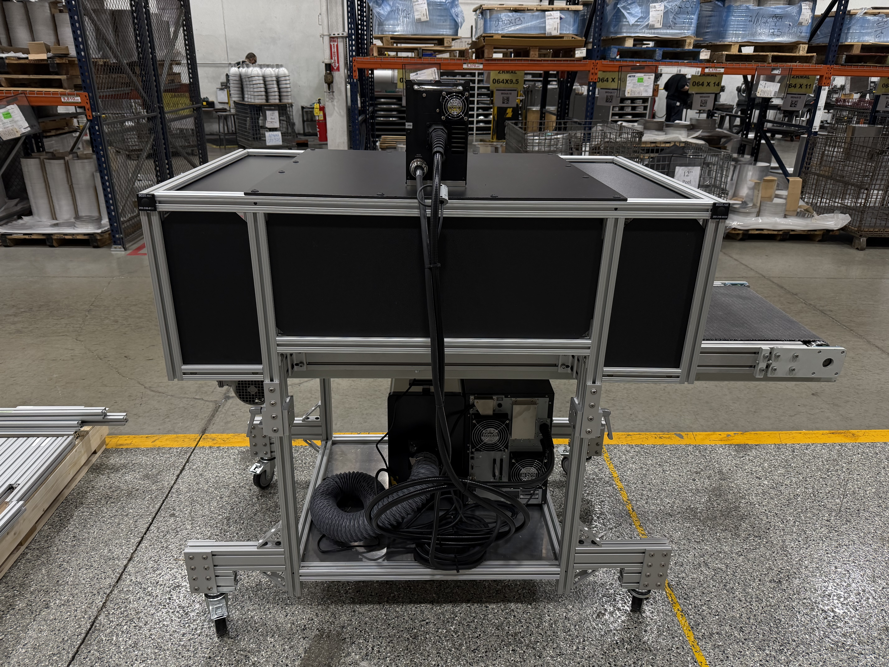

Manual Laser Cell Build
What it is
A custom-built manual laser workcell designed to make laser processing safer, more repeatable, and easier for operators. I designed the full system end-to-end: enclosure + fixtures, electrical cabinet layout, safety chain, controls logic, and the full bill of materials/spec package—then built and commissioned it on-site.
My role
- Owned requirements → concept → detailed design → build → commissioning
- Full 3D CAD: enclosure, fixtures/tooling, component layout, serviceability/maintenance access
- Electrical design: panel layout, wiring scheme, I/O mapping, power distribution, labeling standards
- Controls programming: PLC logic, safety interlocks, sensors, operator sequence, fault handling
- Spec + quoting: vendor RFQs, part selection, cost comparisons, lead-time planning, documentation
- Troubleshooting + iteration after install to improve reliability and operator flow
Impact
- Standardized the process (repeatable setup + consistent results)
- Reduced operator errors with interlocks, guided sequence, and clear fault states
- Designed to hit performance goals without paying integrator pricing (major cost avoidance)
- Built with maintainability in mind: labeled wiring, clean panel layout, service access
Tech / Components
- Laser system: Keyence (MD-X series) + integrated sensing for part presence/position verification
- Controls: PLC-based control with discrete I/O, clear state machine sequence, and robust alarms
- Sensors: photoelectric / laser sensors (e.g., Keyence LR-TB class) for detection + process checks
- Safety: E-stops, door interlocks, safety relay chain, guarded access to laser area
- Electrical: 24VDC control, fused power distribution, clean wire management + labeling
- Mechanical: custom fixtures/tooling modeled for fast changeover + consistent locating
Media


Robotic Pick System Upgrades
Problem
The robotic pick system relied on compressed air to separate stacked raw material before the robot attempted a pick. The original air tool was inefficient and frequently failed to separate parts properly, leading to double picks, robot crashes, and increased scrap. Additionally, the robot’s gripper used a mechanical limit switch that required physical contact with the part, leaving visible marks on the product and reducing the effectiveness of the separation airflow.
Solution
I redesigned two key components of the system. First, I replaced the original air separation tool with an industrial air knife, allowing a higher volume airflow while using less compressed air. This dramatically improved part separation before the robot attempted a pick.
I also replaced the mechanical limit switch on the robot gripper with a distance-based photoelectric sensor. This removed the need for physical contact with the part while providing much more reliable pick detection.
Result
- Significantly reduced robot pick faults and crashes
- Lower scrap rate from improved pick reliability
- Improved part quality by eliminating scratches caused by the limit switch
- More consistent single-part picking due to improved air separation
- Enabled extended lights-out production with no operators present due to increased system reliability
- Substantially increased overall production throughput
Implementation Notes
- Installed and tuned industrial air knife for improved part separation
- Integrated distance photoelectric sensor into robot gripper tooling
- Updated robot logic to use non-contact pick confirmation
- Optimized airflow to increase separation efficiency while reducing air consumption
Robotic Laser Marking Cell Integration
Project Overview
Designed and integrated a fully automated robotic laser marking cell to engrave product information onto manufactured parts. The system was built to replace manual marking processes while improving consistency, traceability, and production throughput.
System Design
I managed the full lifecycle of the automation system including mechanical layout, controls integration, sensor selection, and system programming. The project combined a robotic handling system with an industrial laser marking unit, conveyor transport, and custom safety enclosure.
Impact
- Automated previously manual marking operations
- Improved marking consistency and traceability
- Reduced operator involvement in the marking process
- Created a scalable cell design for future automation expansion
Technical Highlights
- Integrated industrial robot with laser marking system
- Designed PLC control logic for coordinated motion and marking cycles
- Implemented sensors for part detection and position verification
- Developed safe robot and laser interaction sequences
- Created electrical layout and control cabinet architecture
- Commissioned and validated the full automation cell